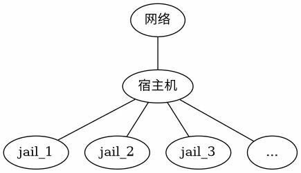

Qjail
Table of Contents
Jail 管理工具对比
Qjail 是用于部署 Jail 环境的封装工具，提供了安全性和性能增强功能
本节部署的 Jail 的概念结构如下图所示：

预留 Jail 的 IP 地址：网络接口配置
在 /etc/rc.conf 文件中添加如下配置。克隆接口 lo1 可将 Jail 网络和宿主机网络配置分开，增强隔离性
cloned_interfaces="lo1" # 克隆出 lo1，应和宿主机网络配置分离 ① ifconfig_lo1_alias0="inet 192.168.1.1/28" # 创建独立网段，共 14 个 IP 可供分配。需要根据实际网络环境调整地址范围
如果要生成多个接口，应在同一行中以空格分隔描述，而不是另外创建多行，应为 cloned_interfaces="lo1 lo2" 分行书写时，仅第一行生效
重启所有网络接口以应用配置：
$ service netif restart
lo1 将获得 14 个 IP 地址，均可用于分配给各个 Jail
安装 Qjail 工具
使用 pkg 安装 Qjail：
$ pkg install qjail
使用 Ports 安装：
$ cd /usr/ports/sysutils/qjail/ $ make install clean
设置 qjail 服务开机自启动：
$ sysrc qjail_enable=YES
部署 Qjail 使用的目录结构
使用 Qjail 前，需部署其目录结构，有以下两种方式：
从官方镜像站自动下载
$ qjail install
此时 Qjail 将从 FreeBSD 官网下载 base.txz 文件，示例输出如下：
$ qjail install resolving server address: ftp.freebsd.org:80 requesting http://ftp.freebsd.org/pub/FreeBSD/releases/amd64/amd64/15.0-RELEASE/base.txz remote size / mtime: 195363380 / 1652346155 ...
方法二：从境内镜像站下载
境内网络访问受限时，可使用镜像站手动下载，以中国科学技术大学开源镜像站为例 使用 freebsd-version 命令可确认宿主机的 FreeBSD 版本，Qjail 要求文件版本与宿主机一致 以下示例为 FreeBSD amd64 15.0：
从镜像服务器下载 FreeBSD 基本系统文件：
$ fetch https://mirrors.ustc.edu.cn/freebsd/releases/amd64/15.0-RELEASE/base.txz
使用 qjail 安装基本系统到指定 Jail：
$ qjail install base.txz
部署 Qjail 的目录结构后，/usr/jails 目录下会自动生成 sharedfs 、 template 、 archive 、 flavors 四个目录，这四个目录构成了 Qjail 的核心文件系统架构：
| 目录 | 说明 |
| sharedfs | 包含一份 只读的 操作系统可执行文件库 ，通过 nullfs 在各 Jail 之间共享以节省存储空间。nullfs 是 FreeBSD 提供的特殊文件系统，可在同一主机的不同位置重复挂载同一文件系统 |
| template | 包含操作系统的 配置文件模板 ，将被复制到每个 Jail 的基本文件系统中，作为新 Jail 的初始配置 |
| archive | 保存 Jail archive 命令产生的 存档 文件，用于 Jail 的备份与恢复 |
| flavors | 包含 系统风格 flavors 和用户创建的自定义风格，本质上是预定义的配置文件集合，用于快速定制新 Jail 的配置 |
文件结构：
/usr/jails/
├── sharedfs/ # 只读操作系统库（各 Jail 共享）
├── template/ # 配置文件模板
├── archive/ # Jail 存档文件
├── flavors/ # 系统风格配置
│ └── default/
│ └── usr/
│ └── local/
│ └── etc/
│ └── pkg/
│ └── repos/
│ └── FreeBSD.conf # 自定义 pkg 镜像配置
├── jail1/ # jail1 的根目录
└── jail2/ # jail2 的根目录
└── usr/
└── local/
└── etc/
└── pkg/
└── repos/
└── FreeBSD.conf # 自动复制的配置
部署 Jail
创建 Jail jail1，指定网络接口和 IPv4 地址：
$ qjail create -n lo1 -4 192.168.1.1 jail1
- -n 指定使用 lo1 作为网络接口
- -4 指定 IPv4 地址
生成 jail1 后，/usr/jails/ 目录下将创建 jail1 目录（/usr/jails/jail1/）用于保存对应文件
可在前述 flavors 目录中创建自定义配置文件，以便部署新 Jail 时自动复制。例如，新建 /usr/jails/flavors/default/usr/local/etc/pkg/repos/FreeBSD.conf 文件，则之后创建的 Jail 将自动复制该文件：
$ qjail create -n lo1 -4 192.168.1.2 jail2
建立 jail2 后，自动生成 /usr/jails/jail2/usr/local/etc/pkg/repos/FreeBSD.conf 文件，即修改了此后所有 Jail 的默认 pkg 镜像
但由于生成 jail1 时尚未在 flavors 目录中写入相应文件，jail1 未生成该文件
Qjail 基本用法
Qjail 管理的 Jail 本质上仍是标准的 FreeBSD Jail，因此 jls、jexec 等系统命令同样可用于查看和操作这些 Jail
以下为 Qjail 专属管理命令:
列出 Qjail 管理的 Jail：
$ qjail list
启用 Jail：
$ qjail start # 启动所有 Jail $ qjail start jail1 # 启动 jail1
停止 Jail：
$ qjail stop # 停止所有 Jail $ qjail stop jail1 # 停止 jail1
重启 Jail：
$ qjail restart # 重启所有 Jail $ qjail restart jail1 # 重启 jail1
进入 Jail 控制台：
$ qjail console jail1
进入 Jail 控制台后，将以 Jail 中的 root 账户身份操作（无需输入密码） 由于 Jail 可能开启对外服务，为安全起见，建议设置 root 账户密码
备份 Jail：
$ qjail archive -A # 备份所有 Jail $ qjail archive jail1 # 备份 jail1
从备份中恢复 Jail：
$ qjail restore jail1
删除 Jail：
$ qjail delete jail1 # 删除 jail1 $ qjail delete -A # 删除所有 Jail
更新 Jail
由于这些文件通过 nullfs 共享一份，Jail 的部分更新并非针对单个 Jail，而是针对所有 Jail
更新 Jail 中的基本系统
更新 sharedfs 中的文件：
$ qjail update -b
更新 ports
选项 -P（大写）使用宿主机的 Ports 更新 Jail 的 Ports 树
$ qjail update -P
更新系统源代码
$ qjail -S # S 大写
更新过程
完整的更新流程如下：
获取并安装 FreeBSD 系统更新：
$ freebsd-update fetch $ freebsd-update install
停止所有 qjail Jail：
$ qjail stop
更新 qjail：
$ qjail update -b $ qjail update -S $ qjail update -P
启动所有 qjail Jail：
$ qjail start
Jail 设置
Qjail 提供 qjail config 命令，用于定制每个 Jail 的配置
Jail 运行时核心配置参数无法安全修改，执行该命令前必须先停止目标 Jail
qjail config 命令提供丰富的配置选项，以下列出几个常用参数:
-h 为 jail1 快速配置 SSH 服务
$ qjail config -h jail1
该命令可快速启用 jail1 的 SSH 服务，新建一个 wheel 组用户，用户名和密码均与 jail1 名称相同 首次使用该用户登录时，系统将要求修改密码。也可在登录 jail1 控制台后，自行配置 sshd 服务
-m、-M 设置 jail1 为手动启动状态：
$ qjail config -m jail1
-m 将 jail1 设为手动启动状态（manual 状态）
qjail_enable="YES" 写入 /etc/rc.conf 文件后，系统启动时将自动启动各个 Jail 设为手动启动后，系统启动时不会自动启动相应 Jail，必须使用 qjail start jailname 手动启动
大写的 -M 选项，用于关闭手动启动状态，即清除 manual 状态，可在系统启动时自动启用 Jail
Qjail 中有大量类似选项，小写字母启用某个功能，大写字母关闭对应功能 下文同时出现小写和大写选项时不再说明
-r、-R 将 jail1 设为不允许启动（norun 状态）：
$ qjail config -r jail1
该配置相当于禁用 jail1
-y、-Y 启用 jail1 的 System V IPC（进程间通信）机制：
$ qjail config -y jail1
在 jail1 中部署 PostgreSQL 等依赖共享内存和信号量的应用时，必须启用该选项
网络设定
部分教程提及使用 qjail config -k jailname 启用 raw_sockets 功能以实现外网访问，此系常见误解 raw_sockets 仅为 ping 等工具所需，并非网络访问的必要条件 在 Jail 中启用 raw_sockets 存在安全风险，此为 Jail 环境默认的安全设计 除非确实需要在 Jail 中使用 ping 等工具，否则不宜启用 raw_sockets 功能
该 Jail 绑定在 lo1 网络接口上，lo1 无法直接访问外网，因此此时 Jail 仍无法连接外部网络，需借助 PF 配置网络，其中 em0 为外网接口
使用 ifconfig 命令可查找系统中的外网接口名称
在 /etc/pf.conf 文件中写入配置。网络地址转换 NAT 可让 Jail 访问外部网络，端口重定向可让外部网络访问指定 Jail 的服务：
rdr pass on em0 inet proto tcp from any to em0 port 22 -> 192.168.1.1 port 22 # 端口重定向：将 em0 上 22 端口的 TCP 连接转发到 192.168.1.1（jail1）的 22 端口 nat pass on em0 inet from lo1:network to any -> (em0)
上述 rdr pass 规则会将所有进入 em0 接口 22 端口的流量重定向到 jail1 如果宿主机也通过 em0 提供 SSH 服务，将导致无法通过 SSH 访问宿主机 建议将重定向的目标端口或外部端口修改为非 22 端口（例如将外部端口改为 2222：rdr pass on em0 inet proto tcp from any to em0 port 2222 -> 192.168.1.1 port 22） 或在规则中添加排除宿主机的条件，以避免宿主机的 SSH 服务被遮蔽
启动防火墙服务：
$ service pf enable $ service pf start
此时，绑定在 lo1 上的 jail 可访问外部网络，外部网络可通过宿主机的 22 号端口连接 jail1 的 22 号端口
示例：部署 PostgreSQL Jail
已按前述步骤预留 Jail IP 并成功运行 qjail install 命令后，以 PostgreSQL 15 为例进行部署，其他版本也适用
宿主机中操作
创建并配置 PostgreSQL Jail：
创建 jail postgres，绑定到 lo1 接口，IPv4 地址为 192.168.1.3：
$ qjail create -n lo1 -4 192.168.1.3 postgres
配置 postgres jail，启用 SysV IPC：
$ qjail config -y postgres
启动 postgres jail：
$ qjail start postgres
编辑 /etc/pf.conf 文件：
nat pass on em0 inet from lo1:network to any -> (em0) rdr pass on em0 inet proto tcp from any to em0 port 5432 -> 192.168.1.3 port 5432
直接向外提供 PostgreSQL 连接存在安全风险，应根据实际需要谨慎开启端口转发
启动防火墙服务 PF：
$ service pf start
进入 jail postgres 的控制台：
$ qjail console postgres
Jail 控制台中的操作
以下命令均在 Jail 控制台内运行，pkg 安装时可根据需要使用镜像
若使用镜像，可在 Jail 控制台中以和宿主机相同的方式设置，详见相关章节
配置 PostgreSQL 数据集
安装 PostgreSQL 的过程略去，详见本书其他章节
设置 PostgreSQL 服务开机自启动：
# service postgresql enable
创建 PostgreSQL 数据目录（注意版本号）：
# mkdir -p -m 0700 /var/db/postgres/data15
设置数据目录属主为 postgres 用户：
# chown postgres:postgres /var/db/postgres/data15
切换到 postgres 用户：
# su postgres
初始化 PostgreSQL 数据库：
$ initdb -A scram-sha-256 -E UTF8 -W -D /var/db/postgres/data15
此处使用 initdb 而非安装时提示的 /usr/local/etc/rc.d/postgresql initdb 目的是避免在设置数据库密码时反复修改 pg_hba.conf 文件
对各选项简要说明如下：
| 选项 | 说明 |
| -A | 为本地用户指定在 pg_hba.conf 中使用的默认认证方法 |
| -E | 选择模板数据库的编码 |
| -W | 使 initdb 提示为数据库超级用户设置口令 |
| -D | 指定数据库集簇应该存放的目录 |
回到 jail root 用户：
$ exit
立即启动 PostgreSQL 服务：
# service postgresql start
| Next: Linux Jail | Previous: 厚 Jail | Home: Jail 容器管理 |